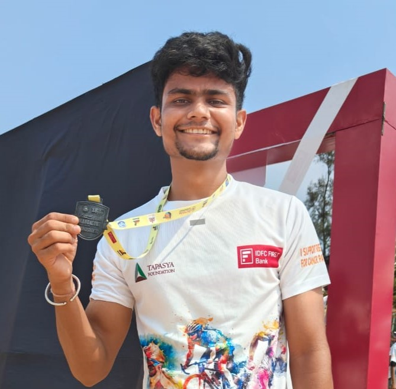

Pawan Birla

Contact: Contact Me
Summary
Dedicated towards my work, eager to learn, can't relief until my work/tasks completes.
On the other hand, I am intersted towards development and in the field of Deep Learning.
Education
- 10th
- Matraseva Higher Secondary School, Indore
- 78.6%
- 2015
- 12th
- Shree Rewa Gurjet Bal Niketan HSS, Sanawad
- 83.8%
- 2017
- B.Tech.
- IES, IPS Academy, Indore
- 81.2%
- 2023
- M.Tech.
- National Institute of Technology, Karnataka, Surathkal
- 81.7%
- 2025
Work Experience
Worked on the Projects, during my Masters, from NITK.
Experience in the field of development.
Created a product for farmers, to eliminate brokers from the agriculture filed.
Skills
- MERN
- HTML, CSS, JS
- DSA
- Deep Learning
Certifications